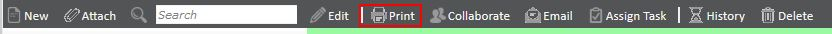
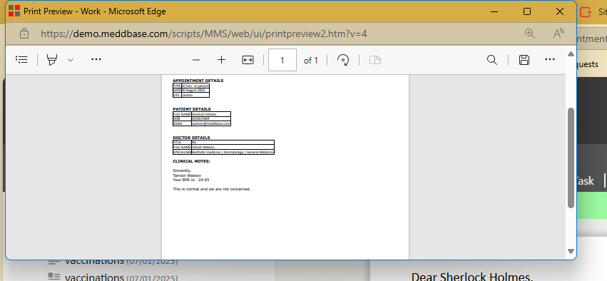
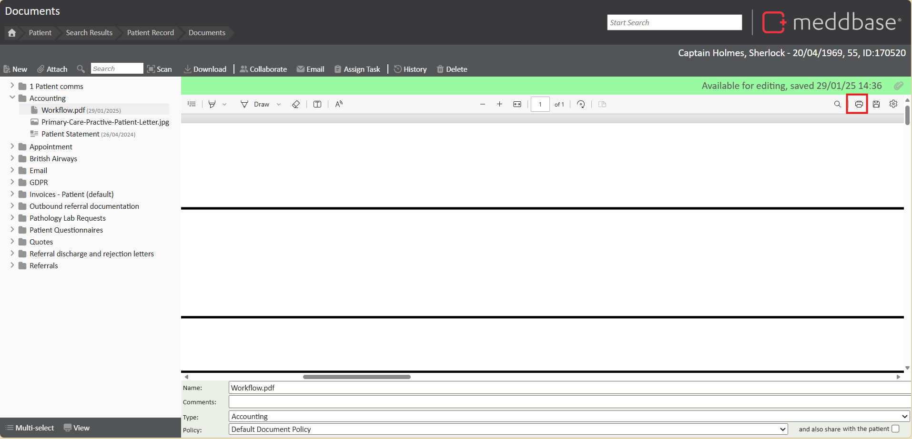
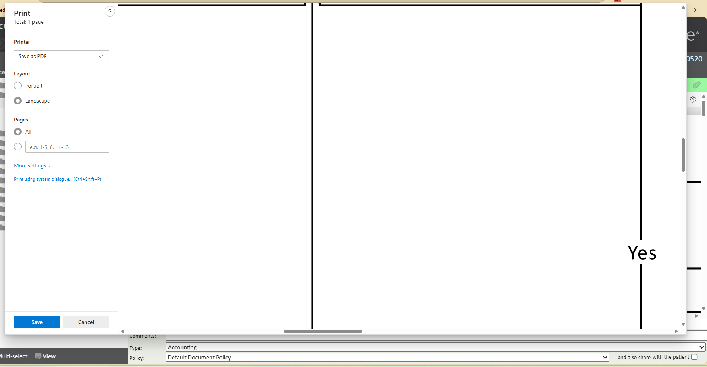
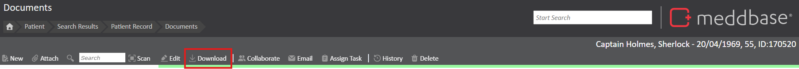

Meddbase provides a range of document types that can be printed directly from the system. However, the printing process differs depending on whether the type of document.
This article explains how to print different types of documents from Meddbase.
To print a Meddbase generated document, navigate to and click on the document. On the top toolbar you will find the ‘Print’ button, click here. Meddbase will open the document in a new window and bring up your computer’s print dialogue for you to process the print job.


Once complete, close the new document window to resume using Meddbase.
To print a PDF, at the top of the preview window, you will see PDF specific controls, look for the Printer Icon. Proceed with the standard device printing instructions that appear on screen.


In the case of an Image File or Microsoft Word documents you will need to first click the ‘Download’ button on the top toolbar to open in Microsoft Word. Once open here, print as usual. (If you are having trouble downloading and opening word documents go to the “Meddbase Document Manager” section)
